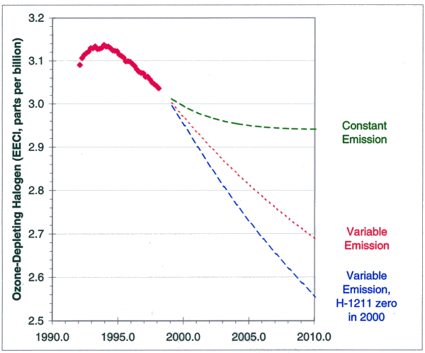

|
CMDL FY99
4th Quarter
Milestones Predict and Assess Decadal-to-Centennial Change |
|
CMDL FY99
4th Quarter
Milestones Predict and Assess Decadal-to-Centennial Change |
Q4: Publish new estimates, based on measurements of the atmospheric burden of human-produced chlorine and bromine compounds, of how the threat posed to the ozone-layer by these chemicals will change in the near future. These results indicate that their aggregate ozone-destroying capacity, which has been declining since 1994, will not continue at the current rate unless future emissions of these gases become smaller. (CMDL, S. Montzka)
Purpose:
This research is related to the goal: Guide the Rehabilitation of the Ozone Layer, in the NOAA Strategic Plan Element: Predict and Assess Decadal to Centennial Change. Performance measures include the use of the data for international assessments of the potential future state of the ozone layer. The data also allow for an assessment of international policy measures designed to reduce the amount of ozone-depleting substances in the atmosphere.
Efforts:
Atmospheric measurements of chlorofluorocarbons and other important trace gases have been performed on a regular basis at remote ground-stations in both hemispheres since the late 1980s and early 1990s. Because accurate and stable reference standards are maintained for these gases, the measurements allow the detection of small changes in the concentrations of trace gases responsible for delivering the majority of the chlorine and bromine to the stratosphere. The data allows the inference of how the concentration of these ozone-depleting halogens will change in the stratosphere. This information is essential for predicting how ozone concentrations might change in the future.
Customers:
Customers on the national and international scale include the general public, scientists, and policy makers who are concerned about ozone depletion and its recovery. Scientists use the data to further understand atmospheric chemistry and mixing processes, and also incorporate them into modeling studies to predict the state of the ozone layer in the future. The general public and policy makers use the data to gauge the effectiveness of national and international legislation designed to reduce the amount of ozone-depleting chemicals in the atmosphere. The data were published in the 22 April 1999 issue of the international journal Nature. Furthermore, the data have been used in the WMO/UNEP Scientific Assessment of Ozone Depletion in 1995 and 1998. Earlier reports using these data appeared in the Journals Science, Nature, Geophysical Research Letters, and the Journal of Geophysical Research in 1993 and 1994.
Significance:
These data provide the basis for understanding how stratospheric ozone might change in the future. They are necessary for understanding how international legislation has influenced the concentration of these gases in the atmosphere. Although the data show that the overall burden of ozone-depleting halogen has declined by about 3% since the beginning of 1994, several flags regarding this trend were noted. The current decrease arises mostly from the rapid decline observed for one particular gas, and the influence of this gas will become much smaller soon. Furthermore, emissions of some important substances have not decreased in response to production bans in developed countries. Because of these trends, and those for other gases, it was concluded that halocarbon emissions are not yet small enough to sustain a continued decline in the atmospheric burden of ozone-depleting halogen. Only with continued declines in emissions will recovery of ozone be possible.
|  | Past and potential future amounts of ozone-depleting halogen carried by long-lived trace gases. If emission reductions do not continue, ozone-depleting gases will stop decreasing by 2010 (Constant Emission Scenario). If recent past trends in emissions continue, the ozone-depleting halogen content of the air will continue to decrease (Variable Emissions Scenario), and a faster decline would be realized if emissions of the fire-extinguishing agent Halon-1211 were somehow zeroed after the year 2000 (Variable Emission, H-1211 zero in 2000). |
Success and Completion:
This work has been a success because it has provided accurate information to policy makers, scientists, and the general public. Much of the data collected by this group is not available anywhere else, and yet is essential for understanding the future of the ozone layer. Accordingly this work continues to address the NOAA goal of Guiding the Rehabilitation of the Ozone Layer. Reports such as this latest one in Nature have noted important features in the concentration of these gases as measured at CMDL. Although each of these reports stands alone, the ultimate goal of guiding the rehabilitation of the ozone layer is far from over. Continued monitoring will allow for identifying when additional milestones in the concentration and trends of ozone-depleting substances are reached. The future abundance of ozone-depleting substances is far from certain, many possible paths could be followed (see the figure). Only with continued monitoring of these trace gases can we gauge how far down the road to recovery we have come, or if a different road needs to be taken.
Future Activities:
In addition to continuing measurements of CFCs and related trace gases, measurements of trace gases that have large non-anthropogenic sources, such as the methyl halides, will be undertaken. Concentrations of these gases can change as a result of interannual variability and/or climate change and they contribute substantial amounts of chlorine and bromine to the stratosphere. Data for these gases is critical to provide an accurate understanding of trends in the total burden of ozone-depleting gases in light of the changes achieved through international legislation.
Q4: Report on the initial results of a new network of UV spectral radiometers at Barrow and Nome, Alaska, and St. Paul in the Pribilof of Islands, which provides important ultraviolet radiation monitoring of the Arctic region and will aid in developing an understanding of the impact of ozone-related UV increases on the Arctic ecology. (CMDL, R. Tatusko)
Purpose:
This research is related to the goal: Guide the Rehabilitation of the Ozone Layer, in the NOAA Strategic Plan Element: Predict and Assess Decadal to Centennial Change. Performance measures include the use of the data for international assessments. There has been a significant change in Arctic ozone levels, particularly during the past decade. Changes in Arctic ozone have been rapid in recent years and long-term downward trends have been observed throughout the Arctic over the past 15 years, along with regional areas of extremely low ozone observed primarily in the springtime. These past and possible future changes make the Arctic a particularly important area to investigate changes in the distribution of UV. Current predictions for future Arctic ozone levels indicate continued depletion for at least ten years and a very slow and possibly incomplete recovery. The observed changes in ozone have been accompanied by increased UV radiation in the spring, a time when biological systems are most sensitive to the harmful aspects of UV. The highest springtime UV levels measured at Barrow were recorded in March 1997. The existence of decreasing ozone in the Arctic over the next decade, coupled with the potential impact of increasing UV to Arctic ecosystems, requires the continued observation of UV in this region.
In September 1997, with support from the NOAA Arctic Research Initiative (ARI), CMDL took the first step to address the need for improved UV measurements in the Arctic with the deployment of two instruments at its baseline Observatory in Barrow. This was described in last year’s milestone report. This year’s efforts were devoted to expanding the coverage for obtaining UV measurements in order to provide critically needed data over a larger region of Alaska.
Efforts:
In June 1998, multi-channel UV instruments were deployed at Nome and St. Paul in Alaska (see figure). The instruments are slightly different from the one in Barrow (installed in September 1997) in that they measure UV irradiance at wavelengths of 305 nm, 313 nm, 320 nm, 380 nm, and across the PAR band (400-700 nm). Coincident meteorological information is available to provide a broader climatological context for evaluating the radiation balance at both sites. Because an Internet connection is not yet possible at either St. Paul or Nome, data are downloaded on a weekly basis via a telephone modem connection. Daily plots are generated and reviewed to insure that the instruments are functioning properly and that the data look reasonable. Data are available to any user upon request through CMDL, and efforts will be made over the next year to format and transfer the data on a regular basis to the UV data center in Toronto, Canada.
Customers:
The UV data will serve a number of users:
NOAA will use it to investigate the relation between changes in ozone and changes in UV;
NOAA will use it to estimate UV from satellite for the UV Index program;
NASA will use it to develop reliable algorithms to determine surface UV exposure in the Arctic from satellite data;
Scientists will use it to develop radiative transfer models for the Arctic region;
The biological community in NOAA and academia will use it to study potential effects of increasing UV on Arctic ecosystems;
The public will be able to access the data for their own information.
The scientific community was informed about this UV program at two international professional meetings: the European Conference on Atmospheric UV Radiation (ECUV) in Helsinki, Finland (June 1998) and the International Union of Geodesy and Geophysics (IUGG) in Birmingham, England (July 1999). In addition, an overview of the program was provided to the Alaska Native Science Commission (ANSC) in Anchorage and the Inuit Circumpolar Conference (ICC) representative in Nome. This activity will also contribute to the next phase of the Arctic Monitoring and Assessment Program (AMAP) and the International Arctic Science Commission (IASC).
Significance:
This UV network is significant in three respects: (1) it addresses the sparcity of UV monitoring in Alaska. Prior to 1997, the only UV monitoring that existed in Alaska was in Fairbanks (University of Alaska) and Anchorage (Denali National Park, U.S. Environmental Protection Agency); (2) this network enhances the ability to monitor over an area of high variability of and potentially large changes in UV reaching the Earth’s surface. Current predictions for future Arctic ozone levels indicate continued depletion for at least ten years and a very slow and possibly incomplete recovery. This network will enable scientists to monitor not only these changes in ozone across a broader area of Alaska but also any concomitant increases in UV; (3) this network provides greater utility to scientists who will be conducting impacts related research on Arctic ecosystems, especially in the marine environment. The fisheries of the North Pacific Ocean and the Bering Sea are among the most productive in the world. Any significant changes to the marine primary production in these waters as a result of increasing UV could have deleterious effects to the entire infrastructure on which Alaska and, to a larger extent, the U.S. fishing industry thrives.
Success:
The deployment of two UV instruments at Nome and St. Paul, to supplement the 1997 installation in Barrow, has now been completed. A dedicated UV monitoring network is now in place, which provides the basis for future research efforts as described in the next section. The relationship between UV and ozone has been studied for the Barrow site using both Dobson and satellite (TOMS) ozone data. By using the multiwavelength capability of the UV instrument it is possible to minimize the effects of clouds, and to estimate the effect of changes in total ozone on UV. A study was performed on a Siberian forest fire smoke event that significantly reduced UV radiation on a clear day at Barrow, September 22, 1998. Surface UV data were compared with similar data on September 30, 1998, another clear day on which there was no smoke. Finally, a study was performed in which spectral UV data from the Barrow instrument were compared with surface UV radiation predicted from NASA satellite measurements. Significant differences were found, and work is in progress with NASA to provide ground truth data to help with the development of their retrieval algorithms.
Next Steps:
Future efforts will be devoted to analysis of the data and are three-fold: (1) to assess the variability of UV-B, UV-A, and photosynthetically active radiation (PAR) in the Alaskan Arctic, particularly with respect to Arctic haze and changes in ozone and albedo; (2) to improve the ability to estimate UV throughout the Arctic, including the effects of ozone and Arctic haze on UV transmission in the Arctic; and (3) to make the UV data available to the scientific community.
| Climate Monitoring &
Diagnostics Laboratory 325 Broadway R/CMDL Boulder, CO 80303 (303) 497-6074 |